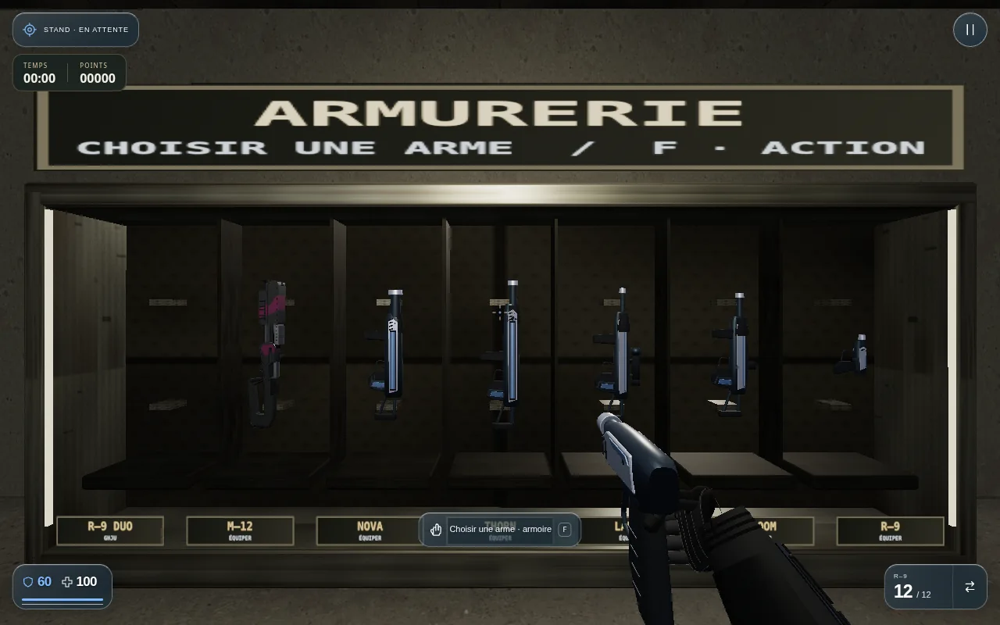
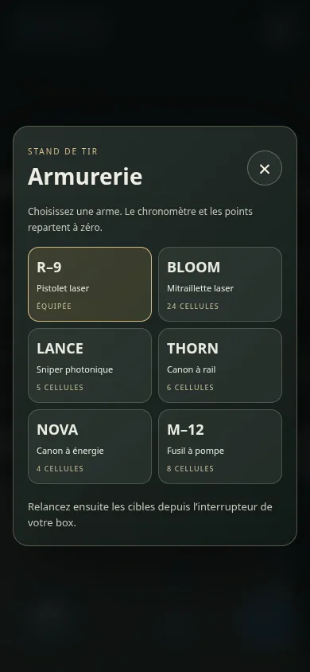

Une arme. Un nouvel essai.
Cibles mobiles ralenties, armoire à l’arrière du stand et résultats distincts pour chaque arme. Chaque changement remet le temps et les points à zéro ; l’interrupteur du box lance ensuite le nouvel exercice.
Ouvrir le jeu · choisir Stand de tir →


Choisir, revenir au box, déclencher.
Le temps reste arrêté pendant le choix. L’arme sélectionnée dispose d’un chargeur plein. Si vous gardez la même arme, vos résultats sont conservés.
Un petit compteur TEMPS / POINTS suit l’essai. En VR, la sélection se fait avec le rayon de la main droite et sa gâchette.
Les doubles pistolets restent réservés à GHJU.